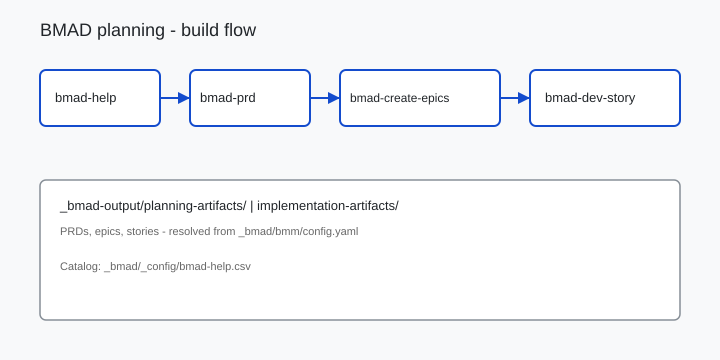

Printable checklist for steps 1 - 5; tick as you go.
Toolkits / Clarify
Walkthrough
Set up BMAD in your repo
Install the BMad Method from upstream, wire output paths in your repo, and run the standard planning → epics → dev-story loop - the open-source skill catalog any compatible agent IDE can use.
Prerequisites: Node 18+, a git repo, Cursor or compatible agent IDE, ~45 minutes.
After this walkthrough
BMAD under
_bmad/, skills in your agent, config.yaml pointing at _bmad-output/, and a clear next step from bmad-help.
Start here
Confirm fit and the end state before you run commands.
Who this is for
| Role | Why run this |
|---|---|
| PM / founder | Structured PRDs and epics without reinventing process each programme |
| Tech lead | Architecture and story skills with shared output folders |
| Agent practitioner | 40+ BMAD skills with catalog-driven routing via bmad-help |
What you’ll have
_bmad/bmm/config.yamlwith artifact paths set_bmad/_config/bmad-help.csvskill catalog- BMAD skills under
.agents/skills/bmad-* _bmad-output/planning-artifacts/ready for your first PRD
Why BMAD
Concrete shift in how planning runs when agents share artifact paths - not generic agile advice.
Before Ad-hoc prompts produce inconsistent PRDs. No shared artifact paths or phase gates. Every kickoff re-decides “what’s next.”
After
bmad-help reads the catalog and files on disk to recommend the next skill. Typically saves 2+ hours of orientation per programme kickoff.
Walkthrough
Run in order. Each step lists expected output so you know before moving on.
-
Step 1
Install BMAD Method.
cd /path/to/your/repo npx bmad-method install
Expected:_bmad/created, installer prompts for modules (BMM minimum). Follow prompts for skill level and output folder.If it fails: Use Node 18+; run
nvm use 20before install. See troubleshooting. -
Step 2
Verify config.
cat _bmad/bmm/config.yaml
Confirmplanning_artifactsresolves to e.g.{project-root}/_bmad-output/planning-artifacts. Edituser_nameif needed.If it fails: Outputs land in the wrong folder - check
planning_artifactsuses{project-root}tokens inconfig.yaml. -
Step 3
Install agent skills (if not bundled).
npx skills add bmad-code-org/BMAD-METHOD --all --full-depth -y
Expected:.agents/skills/bmad-*andskills-lock.jsonat repo root (paths vary by IDE).If it fails: Skills not visible in Cursor - confirm
.agents/skills/exists afternpx skills add. -
Step 4
Run orientation.
In Cursor, invoke
Expected: skill recommends next phase based onbmad-helpor ask “what should I do next in BMAD?”bmad-help.csvand artifacts on disk.If it fails: Wrong phase recommended - state completion explicitly or add output files matching CSV patterns.
-
Step 5
First planning slice.
New project: run
Exit: first file underbmad-prdorbmad-product-brief. Existing codebase: runbmad-document-projectthenbmad-prdupdate mode._bmad-output/planning-artifacts/.If it fails: Scope creep mid-PRD - use
bmad-correct-courseinstead of editing the PRD by hand.
Further reading
Official upstream sources after install. None are required beyond the walkthrough steps.
| Name | Type | Why this one | Link |
|---|---|---|---|
| BMAD-METHOD | Repo | Official installer, modules, and skill source | GitHub |
| BMAD docs | Docs | Install paths, modules, and skill catalog reference | docs.bmad-method.org |
| bmad-help | Skill | Reads bmad-help.csv + artifacts to route your next step |
Bundled with BMAD |
| Vercel skills CLI | Tool | npx skills add for installing BMAD skills into your IDE |
GitHub |
Flow diagram
Buildable structure for your repo - edit labels in Excalidraw, not in generated images.

Downloads
Take these into your repo - each file maps to a step above.
-
install-checklist.md -
bmad-agent-flow.excalidraw Adapt the flow diagram for your team’s skill names.
Troubleshooting
Symptom → fix, tied to the step where it usually appears.
- Installer fails on Node version. Step 1 - Use Node 18+;
nvm use 20before install. - Skills not visible in Cursor. Step 3 - Run
npx skills addand confirm.agents/skills/or your IDE skills directory. - Outputs land in wrong folder. Step 2 - Check
planning_artifactsinconfig.yaml; paths use{project-root}tokens. - bmad-help recommends wrong phase. Step 4 - Artifact detection is fuzzy; state completion explicitly or add output files matching CSV patterns.
- Scope creep mid-PRD. Step 5 - Use
bmad-correct-courseinstead of editing the PRD by hand.
Optional on this site
Companion walkthroughs on this site. You do not need them to install BMAD.
Attribution. BMAD Method by bmad-code-org (MIT). Starter templates / process - adapt for your organisation. Not affiliated with BMAD maintainers.